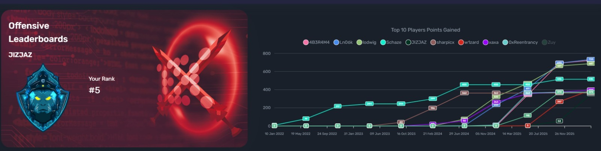
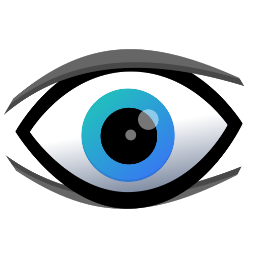
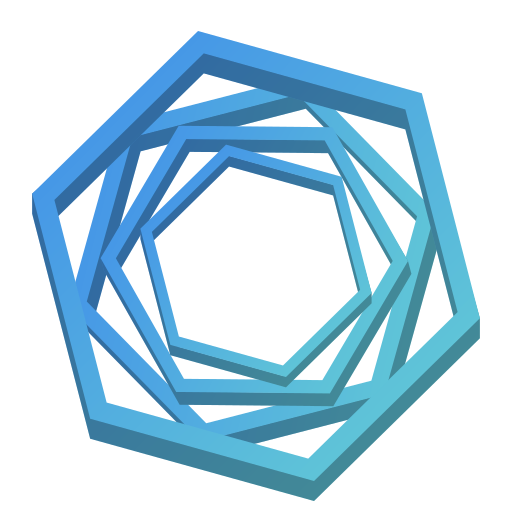

Profesional di bidang Cybersecurity dengan pengalaman kerja sebagai Junior Penetration Tester di Spentera, spesialis pada Red Team Operations serta pengujian keamanan aplikasi web dan jaringan menggunakan metodologi OWASP WSTG v4.2. Terbiasa menangani proyek strategis untuk sektor perbankan dan BUMN dengan menggunakan berbagai alat offensive security untuk simulasi serangan. Memiliki kemampuan analisis mendalam, komunikasi yang efektif, serta penyusunan laporan teknis yang komprehensif.
Memiliki dedikasi tinggi dalam dunia keamanan siber, saya berhasil mencapai Posisi Top 5 di Hacktrace Cyber Range, yang membuktikan kemampuan saya dalam memecahkan tantangan teknis yang kompleks di lingkungan simulasi yang realistis.

> Posisi Top 5 di Hacktrace Cyber Range
Spentera
RAFFI Grafika
Pengalaman di bidang desain grafis mengasah ketelitian (attention to detail) dan kemampuan komunikasi visual saya, yang kini menjadi aset berharga dalam menyajikan data teknis keamanan menjadi informasi yang mudah dipahami.

NMAP BURP SUITE
BURP SUITE

NESSUS METASPLOIT
METASPLOIT
 DOCKER
DOCKER


Alat komprehensif yang dirancang untuk menguji dan mendemonstrasikan kerentanan clickjacking. Memiliki UI interaktif untuk membuat payload dan menguji cross-origin framing.
Buka AlatAlat pengikis data (scraper) performa tinggi. Dirancang untuk merayapi aset web dan mengidentifikasi informasi sensitif seperti kredensial, API key, dan kebocoran konfigurasi.
Buka AlatAlat pengintaian (reconnaissance) otomatis. Mempermudah proses pengumpulan dan pengorganisasian subdomain, port terbuka, dan informasi layanan selama fase awal pentest.
Buka AlatAlat pendeteksi Broken Social Media Link (BSML). Dirancang untuk menemukan link media sosial yang sudah mati (404/Soft 404) untuk mencegah potensi pembajakan akun (hijacking).
Buka AlatSaya selalu terbuka untuk diskusi mengenai keamanan siber, peluang kerjasama, atau sekadar berbagi pengetahuan. Silakan hubungi saya melalui email di bawah ini.
mochamadalifalfajar@gmail.com